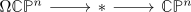
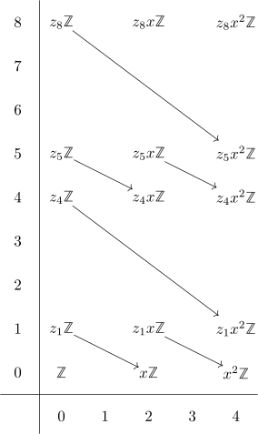

cohomology ring of the loop space of CP^n
Proposition
Let $n \in \mathbb{N}$. Then the cohomology of $\Omega \mathbb{C}\mathbb{P}^n$ is given additively
with $z_{k}$ living in degre $k$. Furthermore the ring structure is given by
- $z_{2n \cdot m} \cdot z_{1} = z_{2n \cdot m + 1}$
- $z_{2n \cdot m} \cdot z_{2n \cdot m'} = \binom{n+m}{n} \cdot (z_{2n + (m +m')} ?$
Proof
a)
b)
use the cohomological serre spectral sequence for the fiber sequence

I will sketch the case $n = 2$: together with the nontrivial differentials.

where all differentials are isomorphisms (todo :/ )
under multiplication of the E2 page of the cohomological serre spectral sequence under the kunneth iso we may add the generators $z_{-} x^{-}$
Now for the ring structure:
a) $z_1 \cdot z_{4m}$
using the leibniz rule this gives (up to sign)
and since $d_2(-)$ is an isomorphism, we get up to sign resp. after renaming generators
b) $z_{4m} \cdot z_{4m}$
We claim that $z_{2n \cdot m} \cdot z_{2n \cdot m'} = \binom{n+m}{n} \cdot (z_{2n \cdot (m +m')} ?$ Proof by induction
induction basis
for $m = m' = 0$ we get
by unitality - after choosing $z_0 = 1$ to be the unit of the ring
induction step
from $m$ to $m+1$ - the case $m'$ to $m'+1$ follows from commutativity (since everything is in even degree, it is even commutative, not only graded-commutative)
Then we may use the leibniz rule and induction to get